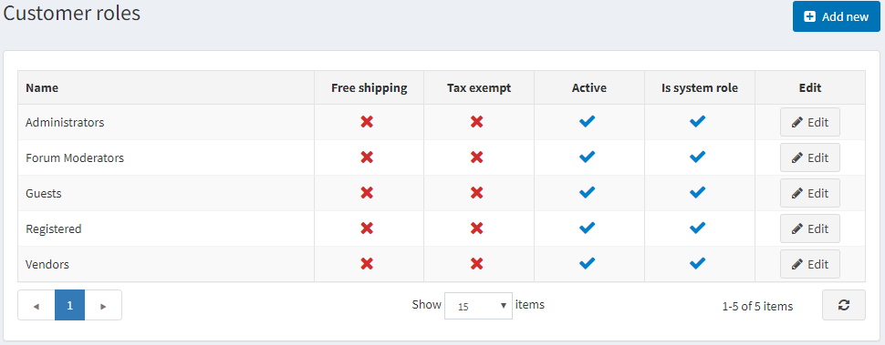
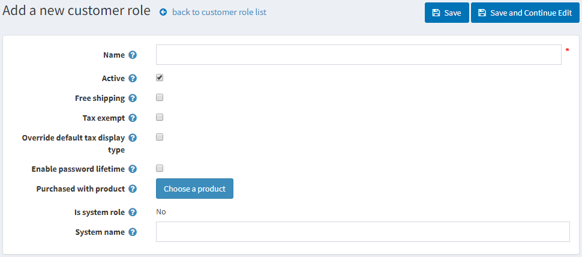

顧客角色
nopCommerce 中的顧客角色讓您可以將商店的使用者分組。您可以建立各種群組，例如商店管理員、購物者、供應商 等。您也可以透過 存取控制清單，授權這些群組特定的權限，例如折扣定價以及其他特殊狀態（如免稅、免運費等）。
若要管理顧客角色，請前往 顧客 → 顧客角色。此時將顯示「顧客角色」視窗，如下所示：

點擊 新增 以加入新的顧客角色。系統將顯示「新增顧客角色」視窗：

請定義以下資訊：
名稱：顧客角色的名稱。
啟用：勾選此項以啟用該角色。
免運費：勾選此核取方塊，讓擁有此角色的顧客在訂單中享有免運費優惠。
免稅：勾選此核取方塊，讓擁有此角色的顧客進行免稅購物。
覆寫預設稅額顯示類型：勾選此項，並從 預設稅額顯示類型 下拉式選單中選擇一種稅額類型：
- 含稅
- 未稅
啟用密碼有效期限：勾選此項以強制顧客在指定時間後更改密碼。
購買特定商品：點擊 選擇商品 按鈕以選擇特定商品。一旦顧客購買（付款）該商品，系統便會將該顧客加入此顧客角色。
Note
若發生退款或訂單取消的情況，您必須手動將顧客從此角色中移除。
為系統角色：此設定顯示該角色是否用於程式碼中。它是預先定義好的，無法修改。
系統名稱：顧客角色的系統名稱。
點擊 儲存。